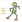

The curriculum is going to bend around what you actually want to cook. Every meal you make this month is something I'll see and respond to. In your case that means high-protein, low-carb meals you can pull together without thinking about them.
Cooking has been the most steady thing in my life through some unsteady years. I spent close to a decade running Foodnome, and the kitchen was where I'd go when payroll was tight, when we were pivoting the whole business through the pandemic, when nothing else felt steady. An hour at the stove and I'd have at least one thing that came out right. I want you to have that.
The rest of this packet covers what Food Jazz actually is, what the next thirty days look like, and how to show up. Give it a good read. Underline whatever you push back on. Bring those to our first session.
After our audit, the first week is observation. Eat the way you normally eat — don't do anything extra. Send me photos when you can. That helps me build the month around what you actually like, instead of guessing.
Food Jazz is a way of cooking that starts with what you already know. You've been eating your whole life. You have strong opinions. You can walk into a restaurant and tell within three bites whether the chef is paying attention. You have taste. What's missing is a way to translate what's in your head onto your plate. That's what we're going to build.
Most people learn the first way and assume it's the only one. It's not.
Because you have good taste,
and you deserve to eat well.
A pre-week to observe how you actually eat, then four weeks built around heat: what's possible without it, what high heat does, what slow heat does, and how to put it all together. The shopping philosophy is simple. We buy the ingredients you already like eating, then spend the month combining and transforming them every way we can. The same handful of ingredients turns into four entirely different things depending on what you do to it. By the end, you're hosting a dinner party.
The weekly sessions are where we cook together and the big lessons land. Between sessions, a small daily loop keeps you in motion.
The whole month rests on a few small commitments. None of them are heavy on their own. Together they make the difference between a course you took and a habit you keep.

By day thirty, the way you think about food has shifted. Here's what tends to happen.